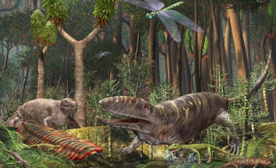
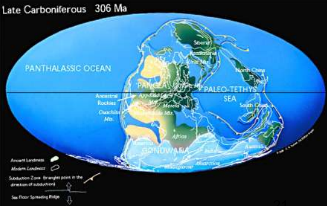

The Carboniferous Period was the time of peak amphibian development and the emergence of the reptiles. The term "Carboniferous" comes from England, in reference to the rich deposits of coal that occur there. This period is divided into two subperiods: Mississippian and Pennsylvanian.
Life Forms during this Period
During the Mississippian subperiod, the first seed plants appear. The Pennsylvanian subperiod on the other hand is when lizards and winged insects first appear.

Geological Features during this Period
Ice covers the southern hemisphere and coal swamps are formed along the equator. In the later half of the period, the Pennsylvanian subperiod, low sea level, and mountain building is experienced as the continents collided to form Pangaea.
